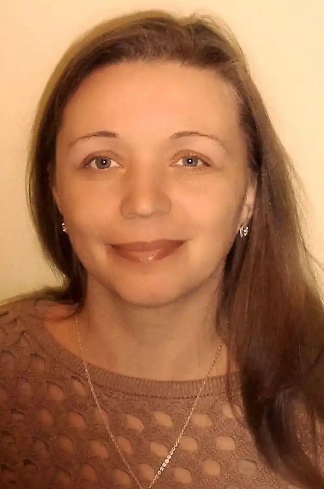

Галина Олійник — поетеса безпосереднього, живого пісенного обдарування, пройнятого світлим, оптимістичним світовідчуттям. Вона щиро відгукується на розмаїті імпульси рідної землі, природи, зоряного неба, оспівує такі людські почуття, як любов, материнство, вдячність і довіра до буття, до його захопливих різнобарвно-яскравих проявів.
Покотивсь передзвін, перелив,
Гомонить Всесвіт нотами див, І душа зазвучала моя, Адже в ньому співаю і я. Народилася Галина Олійник 22 грудня 1977 року на Сумщині, у селі Катеринівка Великописарівського району. Закінчила Правдинську середню школу, потім — Сумське училище культури, відділ народних інструментів. Пісня, музика, якими надихалася ще від маминих колискових, від незабутнього дитинства у своєму співочому краї, стали не тільки покликанням, а й професією: у Рябинівській ЗОШ працювала вчителем музики, прищеплювала дітям любов до гармонії звука, до слова, чия виразність посилюється музичним супроводом.